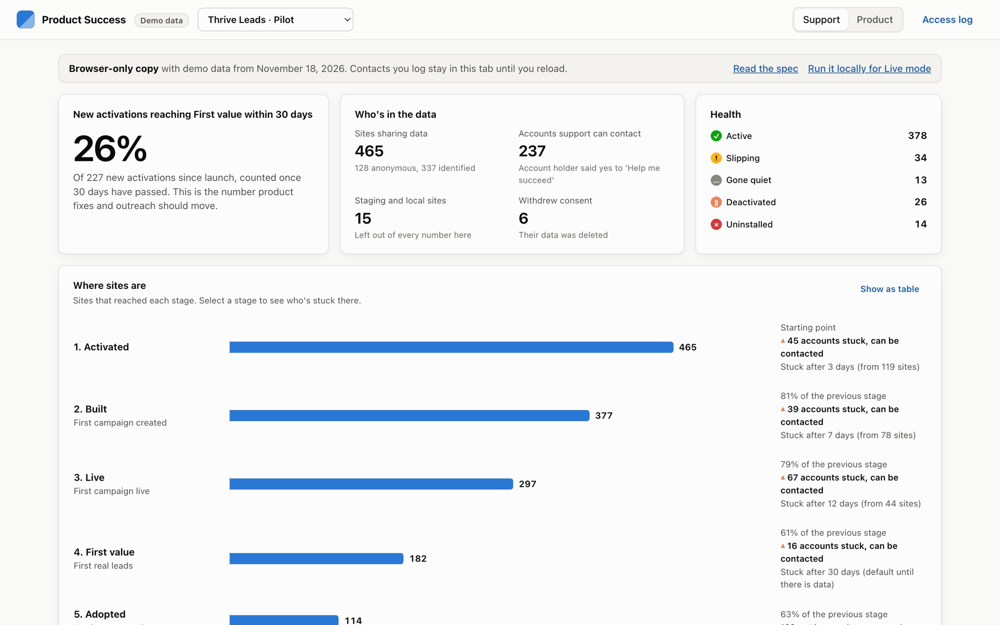

Product Success Platform
Know which stage every customer site is at in every Thrive product, and give support a short daily list of customers they can help move forward.
Draft for review. Updated November 18, 2026.
Read the spec
The five stages, what we track, how consent works, the support console, and the pilot that tests whether outreach helps.
Open the demo
A working support console with invented data. It runs in your browser, with nothing to install.

- One ladder for every productActivated, Built, Live, First value, Adopted. A site's stage is the furthest it has got, so it never goes backwards.
- Consent comes firstNothing that identifies a customer is collected until the account holder says yes to "Help me succeed." The anonymous tier stays as it is today.
- Outreach is a testStuck accounts are split at random into contact and holdout, and the result is read once, at the planned size.